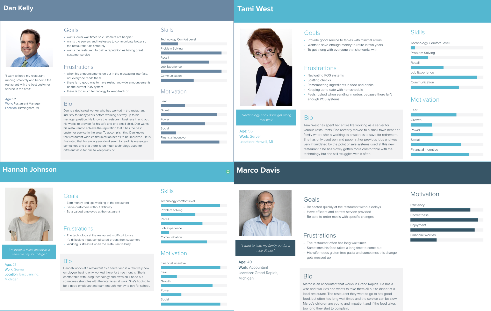
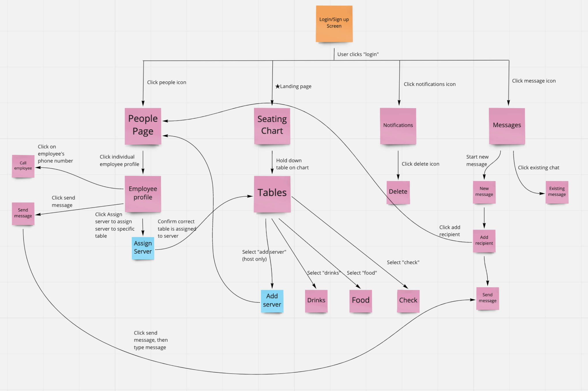
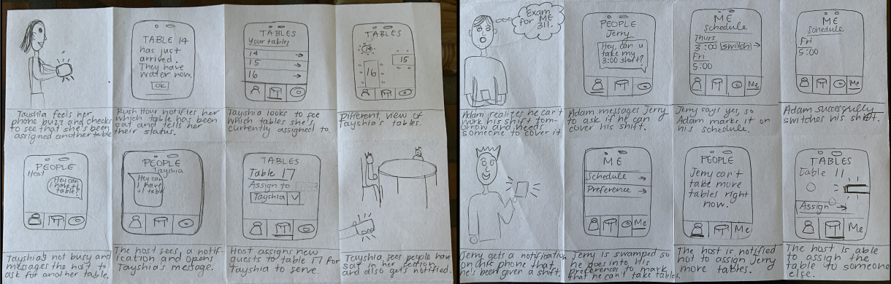
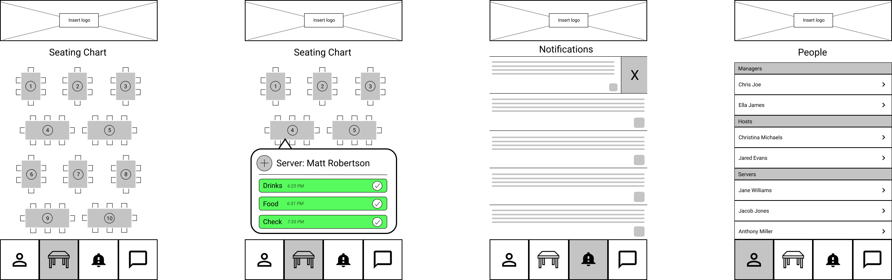

Rush Hour Mobile Application
A mobile application designed to facilitate communication among restaurant employees.

Project Overview
Timeline:
This project was completed over a four month period, with different phases for research and design.
Role:
I was one of three UX students on the team and was responsible for organizing meetings to complete research and design work.
Tools:
Figma, Miro, Zoom
Team:
Molly Bis, Colton Joyce, Erin Brynn
Problem
Restaurant employees often face a lack of communication and direction that leads to confusion and inaccuracy during their shifts. This lack of communication stems from confusing point-of-sale systems and unclear instruction from management. In order to combat these problems, we wanted to design a mobile application that could serve as a link between servers and hosts and provide a way for management to easily contact employees.
Research and Data Analysis
Our team first conducted exploratory research in order to learn more about the problem domain. We interviewed six restaurant employees who work at various restaurants in lower Michigan and discussed the pain points they encounter during their shifts. We found that employees struggle mainly with two different actions while working: communicating quickly and effectively with other employees and inputting food orders into the point-of-sale system.
In order to better empathize with restaurant employees, we gathered insights from our interviews and developed user personas and scenarios. The personas shown below allowed us to view the frustrations of working in a restaurant from a different perspective, and we made an effort to include various types of employees to ensure we were capturing as many situations as possible.
After using the personas and scenarios to understand the problems employees face while working, we knew we needed to narrow down the scope of our project to focus on just one main issue. To do this, we created a user flow diagram and mapped out the various interactions we wanted our application to include. This was a very important step in our project, as we realized we had been trying to solve too many problems. We were able to settle on communication as our main focus for the application. The diagram below shows our initial thoughts about the user flow and interactions.
Design Process
The next step in our process was to start thinking about the design of our application. In order to brainstorm ideas, we each sketched a large number of possible solutions and then met to share our thoughts. My sketches are shown below.
We then used these sketches to develop a paper prototype, with which we conducted usability tests. We wanted to ensure that we were going in the right direction before we went any further with our designs, and these usability tests allowed us to uncover issues before creating digital wireframes.
We made some adjustments to the flow of our application after our initial usability testing and began working on digital wireframes using Figma. These wireframes were helpful in making us think about the placement of elements on our screens and paved the way for us to start designing our final prototype.
After deciding on color and font choices for the application, we each worked on a specific section of the application mockups and met to share our ideas and make sure everything was standardized. We created components for various parts of the application, such as the navigation and messaging, and used these to ensure that we had a consistent style throughout the designs. We then connected the various parts of the application and developed a prototype, which we refined after another round of usability testing.
Our final prototype brings together the design decisions of the entire team and is based in our initial user research. Through weekly design critiques with our entire class, we were able to refine our process and gain inspiration from other groups while providing them feedback.
After the class finished, I went back and made some changes to ensure that all of the fonts and colors were the same throughout the prototype and to incorporate some of the final feedback from our instructors. The final prototype is linked here.
Reflection
This project taught me about the importance of making design decisions that can be justified by user research and that it is crucial to begin evaluating designs early in the process in order to prevent large oversights. It was very rewarding to work on a project from the user research phase to the final prototype and to see how our ideas grew and changed over the four month time period. I am grateful to my team members for their hard work on this project and to my classmates and instructors for all of their feedback.